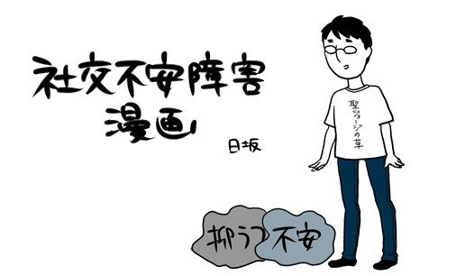

이 글을 읽고있는 모든 이들에게.
안녕하세요
아마 이 글을 읽고 계시는 여러분들은 안녕하지 못하기 때문에 지금의 글을 보고 계실거라고 생각합니다.
그렇기 때문에 더더욱 저는 당신의 마음을 편안하게 해드리기 위해 지금부터 당신을 설득하고 납득시키려 합니다.
저는 정신과 전문의도 아니고 의사도 아니며
심리학 관련한 전문지식도 없는 그저 한명의 환자일 뿐입니다.
그러므로 환자의 입장에서 이 책을 써내가려고 합니다.
아니, 환자라기보다는 상처받기 쉬운 취약한 영혼이라고 보는 편이 정확하겠지요.
둥글고 때묻지 않은 영혼일수록 깨지기 쉽고 더럽혀지기 쉬운 법입니다.
저와 여러분같은 상처받기 쉬운 영혼들이 살아가기에 이 행성은 결코 살아가기 쉬운 환경이 아니었을 겁니다.
그러므로 이 글은 우리가 이 지구라는 곳에서 사람들과 얽혀 살아가기 위한
생존 지침서의 하나라고 보셔도 무방합니다.
여러분은 세상 사람들이 말하는것처럼 악바리가 될 필요도 없고 영악해질 필요도 없습니다.
그들이 말하는 것은 동물의 왕국에서 살아남기 위한 맹수의 룰이며 우리는 우리만의 구별된 세계가 있습니다.
먼저 그것을 인정하는것이 행복의 시작점입니다.
불안의 경력은 30년, 초등학생시절부터 불안에 시달리며 실체가 없는 귀신을 두려워하며 밤잠을 설쳤고,
중고등학생때는 폭력에 시달리고 왕따를 당했으며 그것이 트라우마가 되어 대학에서는 아싸생활을 하며 추억하나 없는 20대를 보냈고,
군대에서는 관심병사로 모두에게 민폐를 끼치고 생활하였으며,
백수생활을 했던 시절, 집에서 나올때에는 항상 가방에 서바이벌 나이프를 넣고 다녔고
사람들이 많이 모인곳에서 어깨에 치이거나 부딫혀서 넘어질뻔 하는 상황이 발생하기라도 하면
언제 돌발행동을 할지 모르는 일촉즉발의 나날의 연속이었습니다.
직장에서는 고문관으로 찍혀서 욕먹다가 퇴사하거나 조용히 다음날부터 나오지 말라는 소리를 듣고 잘리기 일수였습니다.
지금 생각해보니 이 모든 문제의 원인은 저의 불안심리에 있었습니다.
사람을 두려워했기 때문에 사람을 경계하고 그렇기에 실제로 공공의 적이 되었습니다.
공부를 두려워했기 때문에 실제로 성적이 낮았고
돈을 두려워했기 때문에 돈은 모이지 않았습니다.
불안장애를 겪고 있는분들이라면 공감하실겁니다.
앞으로 내게 다가올 공포와, 지금까지 내가 겪었던 불행의 통계.
전혀 나아지지 않을거라는 전망이 내게 가져오는 우주적 공포란 말로 형용할 수 없다는 것을.
저는 매일 밤마다 죽음을 생각하고 눈물을 흘리며 밤을 지새기 다반사였고
제대로 된 수면을 취하지 못해 낮에는 항상 가수면 상태로 생활하였습니다.
아무리 노력해도 남들처럼 보장받지 못하고 보상받지 못하는 현실과
저능한 자신의 심신을 저주하며 그저 죽기만을 바라며 매일매일을 보내왔습니다.
단순한 우울증과는 달리 불안과 두려움에 휩싸인 불쌍한 영혼에게는 죽는것조차 두렵기 때문에
자살시도조차 하지 못합니다. 그저 끝없는 고통과 싸우며 지는것이 확실한 처절한 씨름을 계속할 뿐이지요.
그렇다면 어떻게 이 불안을 극복하고 이 잔인한 세상에서 살아남을 수 있을까요?
저는 이 고민을 평생 지속해오며 살아왔습니다.
그러면 이제부터 제가 깨달은 것들을 여러분들과 나누고자 합니다.